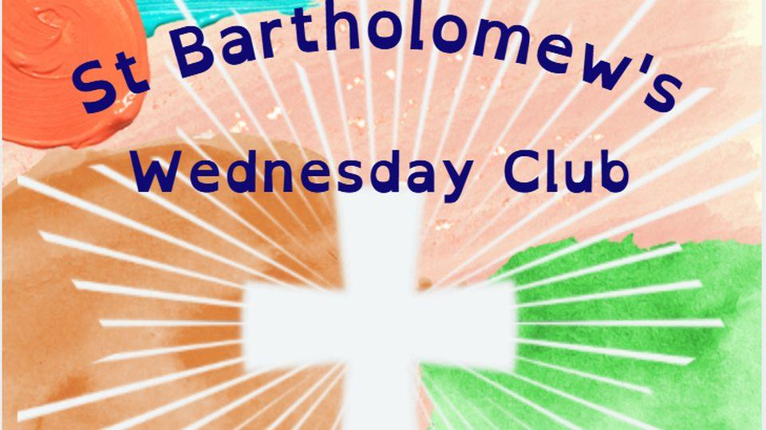
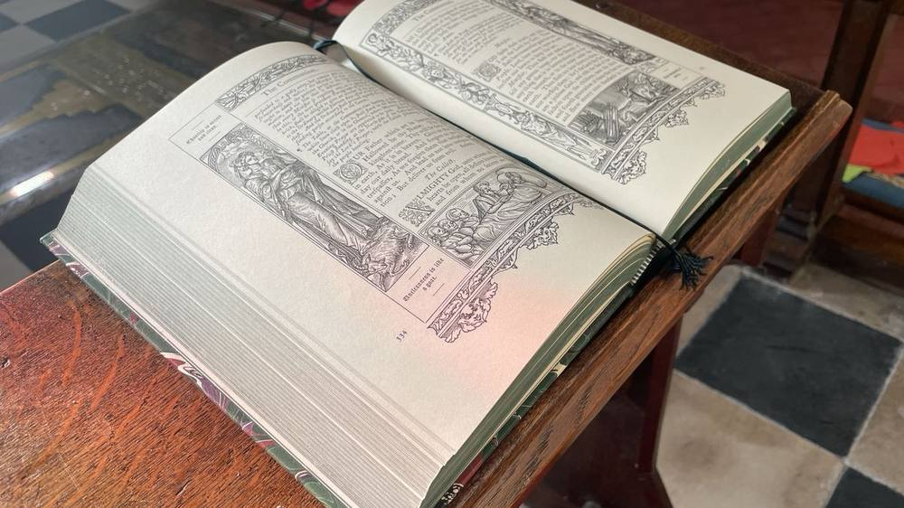
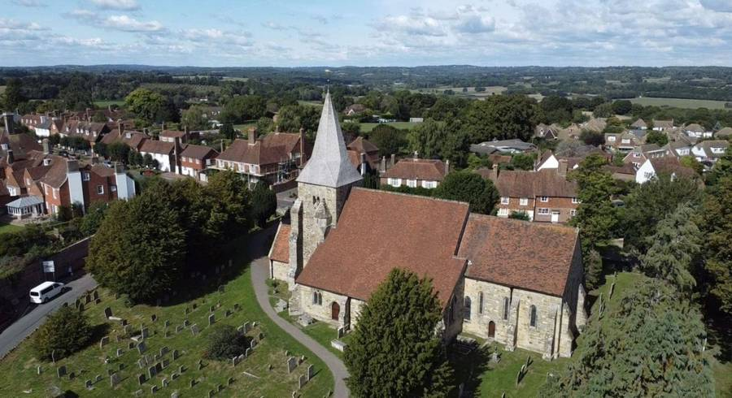
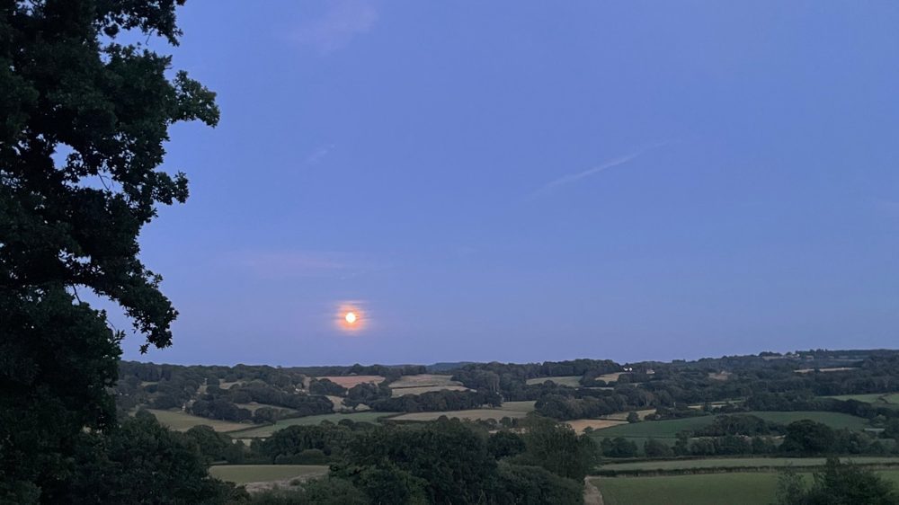

Find your place
We worship in different ways, and everyone has a place. What are you looking for?
“I want something for my whole family”
4th Sunday, 10.30amFamily Communion & Sunday SchoolSt Bartholomew's, BurwashWhat to expect →
or
2nd Sunday, 4.30pm alternate monthsPraise@thePavilionBurwash Common PavilionWhat to expect →
“I love music and tradition”
2nd Sunday, 10.30amTraditional service, hymns & Sunday SchoolSt Philip's or EtchinghamWhat to expect →
or
1st Sunday, 4.30pmBCP EvensongSt Bartholomew's, BurwashWhat to expect →
“I need a quiet, reflective space”
3rd Sunday, 9.30amSpoken CommunionSt Bartholomew's, BurwashWhat to expect →
or
2nd Sunday, 4.30pm alternate monthsCandlelit ComplineEtchinghamWhat to expect →
What to expect
Families and children are very welcome at all our services.
Family Communion & Sunday School
4th Sunday, 10.30am, St Bartholomew's, Burwash
Our main benefice service of the month, with all three parishes together. It's a relaxed, all-age Communion with Sunday School for children.

Wednesday Club
Usually the 4th Wednesday, 3.30–4.30pm (term time), St Bartholomew's, Burwash
A messy church style after-school club for primary-age children, with crafts, stories, games, music and snacks, and tea, coffee and cake for parents and carers. Parents or guardians stay on site throughout.
Praise@thePavilion
2nd Sunday, 4.30pm (alternate months), Burwash Common Pavilion
An informal service of worship songs, prayer and a short talk, held in the pavilion rather than a church. It's ideal for families and anyone who'd like to try church somewhere less formal.

Traditional service with hymns
2nd Sunday, 10.30am, St Philip's or Etchingham
A benefice Communion with traditional hymns and Sunday School, for all three parishes together. It alternates between St Philip's and Etchingham.
BCP Evensong
1st Sunday, 4.30pm, St Bartholomew's, Burwash
The beautiful evening service from the Book of Common Prayer, with the choir. It's sung, reflective and timeless.

Spoken Communion
3rd Sunday, 9.30am, St Bartholomew's, Burwash
A quiet, said service of Holy Communion from the Book of Common Prayer, with no music. It's a peaceful, unhurried start to Sunday.

Candlelit Compline
2nd Sunday, 4.30pm (alternate months), Etchingham
The ancient service of night prayer, sung by candlelight. It's still, reflective and a lovely way to end the weekend.
Dates do change from time to time, so check the calendar before you come.
We have many other services too, and everyone is welcome at any of them. See all our services.